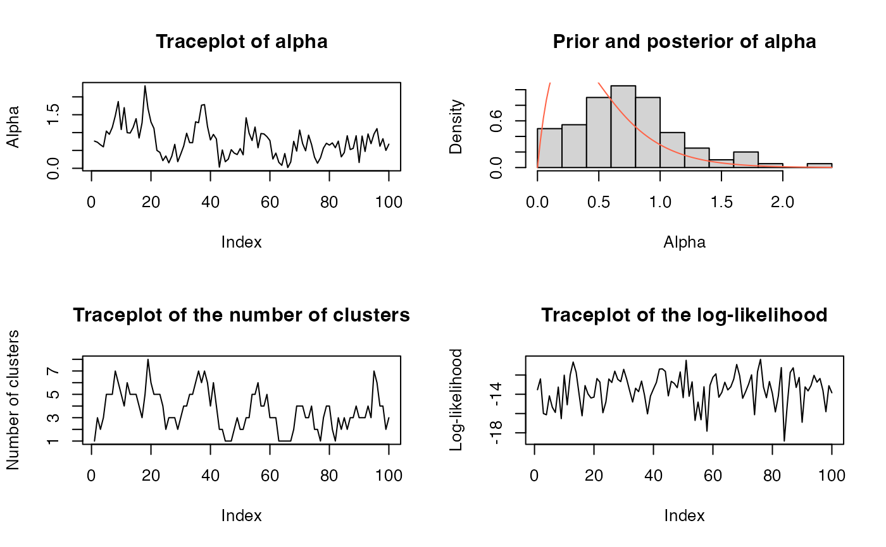

Plot several diagnostic plots for dirichletprocess objects. Because the dimension of the dirichletprocess mixture is constantly changing, it is not simple to create meaningful plots of the sampled parameters. Therefore, the plots focus on the likelihood, alpha, and the number of clusters.
DiagnosticPlots(dpobj, gg = FALSE)
AlphaTraceplot(dpobj, gg = TRUE)
AlphaPriorPosteriorPlot(
dpobj,
prior_color = "#2c7fb8",
post_color = "#d95f02",
gg = TRUE
)
ClusterTraceplot(dpobj, gg = TRUE)
LikelihoodTraceplot(dpobj, gg = TRUE)A dirichletprocess object that was fit.
Logical; whether to create a ggplot or base R plot (if gg =
FALSE). For DiagnosticPlots, this means that the plots will be
given one-by-one, while base plots can be arranged in a grid.
For AlphaPriorPosteriorPlot, the color of the prior
function.
For AlphaPriorPosteriorPlot, the color of the
posterior histogram.
If gg = TRUE, a ggplot2 object. Otherwise, nothing is returned
and a base plot is plotted.
AlphaTraceplot(): Trace plot of alpha.
AlphaPriorPosteriorPlot(): Plot of the prior and posterior of alpha.
ClusterTraceplot(): Trace plot of the number of clusters.
LikelihoodTraceplot(): Trace plot of the likelihood of the data for
each iteration.
dp <- Fit(DirichletProcessGaussian(rnorm(10)), 100)
DiagnosticPlots(dp)
